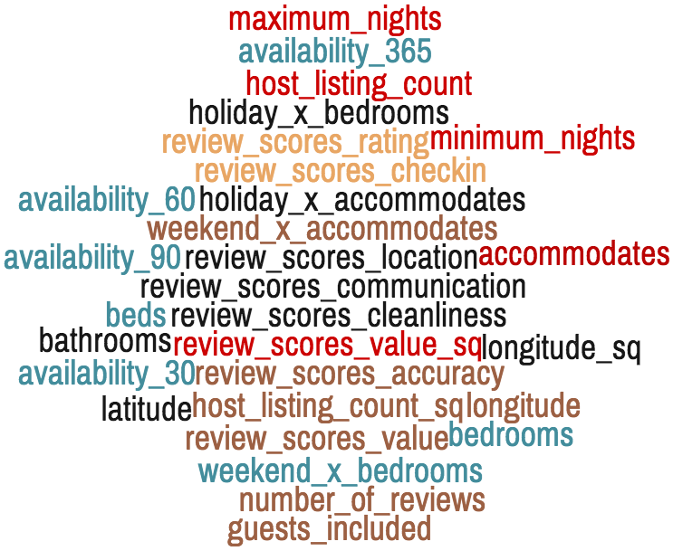
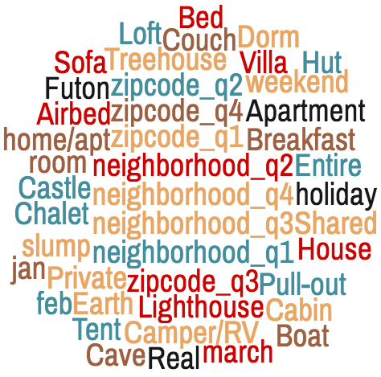
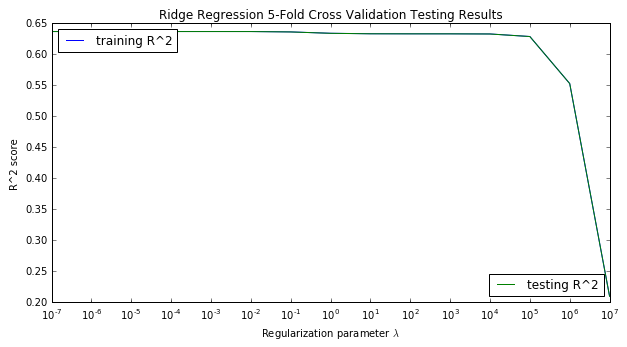
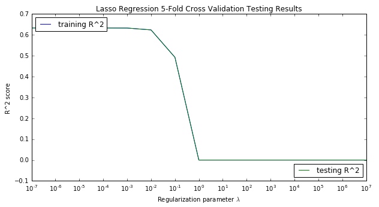
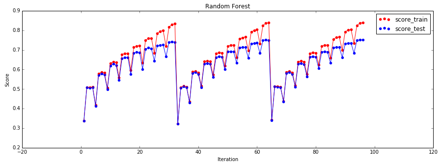
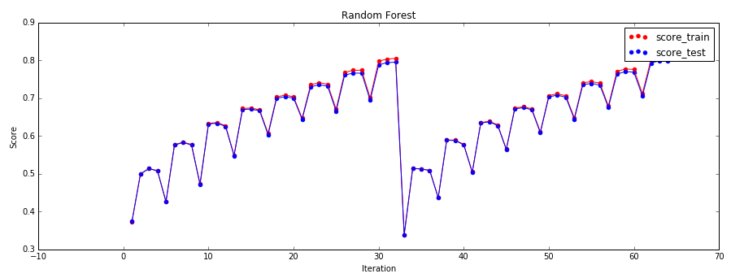
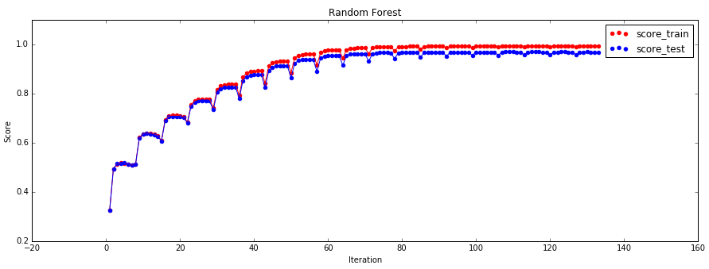
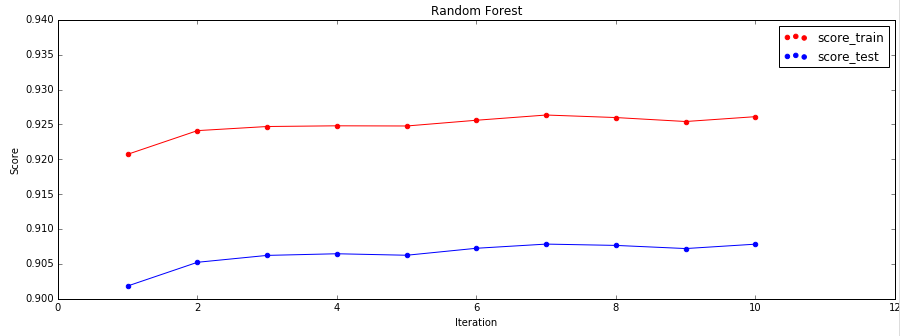

Modelling and Results. Checkmate.
Build a model from the data. Understand what the model is telling us.
Now that we have a bit more of an intuitive understanding of what the data shows us, it was time to build a model that can help us predict Airbnb prices. In order to build the model, our general approach involved some basic assumptions. Given these assumptions, we made a baseline model, and tested the baseline against a few other data models to see which model gives the most accurate pricing prediction, without overfitting the data.
General Modeling Approach and Assumptions Possibly Violated
We choose to model our data by including a single observation for each listing for each day it is offered. This is potentially problematic for two reasons. Firstly, it violates OLS assumption that each observation is independent, because it is obvious that the listings for a given property on different days are highly dependent. Secondly, this may bias our regressions such that the relationships present in properties that are offered more regularly are more highly weighted.
Despite these potential violations, we maintain this data representation because it fully encodes the all of the information we have, both related to the properties, the time of year, and the relationship between properties and the time of year (which we exploit in creating some interaction variables, as described above). We feel that it is reasonable to potentially violate the i.i.d. assumption since the size of our data set is so large (millions of listings) compared to the size of the sets of dependent observations (maximum size of 365). Additionally, we feel that biasing the results towards properties that are more frequently offered is not necessarily detrimental, since we expect these types of properties to be offered more frequently in the future as well, leading to a potentially better performance on future test sets.
Categorical Variables and Encodings
Before fitting any models, it is essential to massaging each of the raw features in a way that is technically rigorous, while achieving interpretability and computational efficiency.
To incorporate the days of the week and holidays, we used the information that we gained from analyzing the average difference from the listing’s own mean price in visualizing how prices changed throughout the year. Ultimately, we found that the real increase in per-night rental costs came on Friday, Saturday, and around the New Years’ holidays. Additionally, we found that non-holiday dates in January and February showed the lowest prices, which we deem as “slump” dates. Thus, we made categorical variables to denote the day of the week (weekend or no weekend), holiday (3 days around New Years’), and slump dates (January and February dates that aren’t around New Years’), as well as individual categoricals for each of January, February, and March to incorporate variability within the slump period.
Because the categorical variables of neighborhood and zip code have over 200 distinct values each, one-hot encoding would produce to far too many variables for a linear regression model – leading to long computational time and a small chance of over-fitting. To solve this, we created four categorical variables for each of these features that separate the neighborhoods and zip codes by price into quartiles. Each quartile is its own categorical variables (e.g. most expensive 25% of neighborhoods, least expensive 25% of zip codes). Thus, we move away from trying to account for individual neighborhoods such as “Tribeca” separately and instead choose to analyze the most expensive neighborhoods together. While we lose some degree of granularity, we believe that what is gained in computational efficiency and streamlined interpretability is well worth it. On examining other approaches for the encoding of these variables, we come to realize that more sophisticated clustering approaches such as K-means are not suited to this task since we are dealing with categorical data that can not be grouped well in a continuous fashion.
Indicators were also created for each of the property types, each of the room types, and each of the bed types. Since each of these categories has relatively few distinct values, it seems that creating one indicator for each distinct value is less likely to lead to severe overfitting or over-complication of the model. Nevertheless, it will be important to perform regularization to avoid potential overfitting.
The final modeling dataset consisted of the following continuous and categorical variables:
Continuous Variables

Categorical Variables

The Baseline Model
The modeling dataset described above was split into train and test datasets where 75% of the data was used for training. For our baseline predictive model, we fit a linear regression model using all of the features to predict price. This baseline regression was trained on a dataset consisting of 7.2 million records with 72 predictors. The model resulted in an R^2 of 0.63 in the test dataset. These initial baseline results supported our assumptions that the Airbnb prices can be effectively modeled. Nevertheless, we are confident that more sophisticated techniques may improve performance.
Competitive Models
Due the high number of predictors (73 after encoding of categoricals), the possibility of overfitting is a concern. In response, we fit and tune ridge and lasso regressions. In order to produce competitive models that would be even more computationally expensive, we decided to reduce the size of the modeling dataset. We created a random sample of one million records (~14% of the total modeling dataset). In order to tune the parameters, we preformed a 5-fold cross validation methodology on this sampled dataset.
Ridge Regression

While ridge regression does not perform variable selection, its ability to shrink the coefficients on unimportant predictors may lead to less overfitting and improved performance out of sample. A list of tuning parameters for the Ridge and LASSO regression models were selected:
lambda_lst = [1e-7, 1e-6, 1e-5, 1e-4, 1e-3, 1e-2, 1e-1, 1e0, 1e1, 1e2, 1e3, 1e4, 1e5, 1e6, 1e7]
The ability of LASSO regression to control overfitting by performing variable selection through the zeroing of coefficients may provide improve test accuracy over the ridge model. The Ridge regression methodology was applied to the 5-fold cross validation datasets with the tuning parameters shown above. This methodology resulted in an average R^2 of 0.64 on the test datasets. Although this was a slight improvement on the baseline model, further modeling efforts were deemed necessary.
LASSO Regression

The LASSO regression method was applied to the 5-fold cross validation datasets with the same tuning parameters that we employed for the Ridge regression model. This method was much more sensitive to the effects of the tuning parameters. The tuning parameters 10-7 through 10-2 retained an average R^2 of 0.63 on the test datasets. However, as the tuning parameters increased the model score drastically dropped to an R^2 of 0.0.
The Ridge and the LASSO regularization models did not provide a significant lift over the baseline linear regression model. The final model that was developed for predicting Airbnb prices was a Random Forest Regression model. This model is also the most computationally expensive.
Random Forest Regression
Due to the computational expense of the Random Forest Regression model, the original modeling dataset of 7.2 million records was randomly sampled to create a dataset of 10 thousand records for an initial approach with this method. The Random Forest Regression model was created by applying an AutoKFold Random Forest Regression method to the 10K observation subset of the modeling dataset. This methodology applied several different levels to the input model criteria of “number of trees”, “tree depth” and “number of features”. The final number of possible combinations of the model criteria was 96:
Number of Trees: 10, 40, 70
Tree Max Depth: 2, 3, 4, 5, 6, 7, 8, 9
Number of Features: 5, 25, 45, 65
The Random Forest Regression model results in a max R^2 score closer to 0.70 on the test dataset. This score is the result of applying each of the combinations of possible model criteria to the Random Forest Regression algorithm on a 5-fold cross validation dataset. The following figure illustrates the change in R^2 associated with tuning the random forest regression over the number of trees, maximum depth, and maximum number of features.

This methodology provided a significant lift over the baseline linear regression model. Due to the positive results of this approach, we increased the number of observations from 10 thousand to 100 thousand in order to determine the impact of the sampling size on the model’s predictive power.
The graphic above demonstrates that the number of trees doesn't significantly change the testing score based on the step-wise nature of the testing scores; the maximum depth and maximum number of features primarily drive increased test scores. Using the same tuning values as above, less the 70 trees option, but sampling now for 100,000 observations, we observe the tuning R^2 values in 5-fold cross validation plotted below.

From this, we note that increasing the number of training observations resulted in a significant increase in the tuned R^2 from around 0.7 to 0.8 on the test dataset.
It is recommended that for a random forest model the maximum number of features should be p/3 where p is the number of predictors. Also, random forests cannot overfit the data with respect to the number of trees, so we should first select the best maximum depth and maximum number of features for some "big enough" value for number of trees, and then re-tune with fixed maximum depth and maximum features while varying the number of trees in order to find the minimum value for number of trees that gives us our best testing scores
So, we fixed the number of trees to be 40 and we increased the possible maximum tree depth from 10 to 40 (with intervals of 2) and we increased the maximum number of features by reducing the interval level from 20 to 10. This resulted in a 133 total number of possible combinations:
Number of Trees: 40
Tree Max Depth: 2, 4, 6, 8, 10, 12, 14, 16, 18, 20, 22, 24, 26, 28, 30, 32, 34, 36, 38, 40
Number of Features: 5, 15, 25, 35, 45, 55, 65

This model resulted in an R^2 value of 0.91 on the test dataset for a 5-fold cross validation dataset.
For the final iteration of the model, we selected a maximum depth of 14 and the maximum number of features to be 25. We want to have the fewest number of trees possible while maintaining model score to decrease training time. However, in order to get an accurate prediction interval with our quantile regression forests method, we need to use more trees (1000) as explained by:
http://blog.datadive.net/prediction-intervals-for-random-forests/

The Final Model
This final model results in an R^2 value of 0.92 on the test data created from the 5-fold cross validation method. This tuned model was implemented on a sample of 1 million randomly sampled observations from the 7.2 million observation modeling dataset. The final model was a Random Forest Regression model with 1000 trees, a maximum depth of 14 and maximum features of 25. The dataset was split into 75% for the training dataset and 25% for the test dataset. The results of the application of this model was an R^2 of 0.92.
We use the quantile regression forests method to build a 90% prediction interval around each of our predictions. The idea behind quantile regression forests is relatively straightforward. Treating the 1000 predictions from each of our trees as the distribution of our prediction, we use the 0.05 and 0.95 percentiles as the lower and upper bounds on our prediction interval. This prediction interval contains the true y_test value for approximate 80% to 90% of the test values.
Conclusions and Future Work
It is possible to estimate the price of Airbnb rentals in New York City on a given night with a high degree of accuracy using random forest regression. Prices are highly dependent on location, features of the listing, and time of the year and week.
A potential issue with the above approach is violation of the OLS independence assumption, which may lead to inflated R^2 values. Future work may focus on addressing the independence assumption using a multilayer model, and generalizing the results to other locales by using additional data sets.
The Airbnb price prediction model has to opportunity to be developed further by tuning the model to other locations and making the predictions public for Airbnb users. Property owners could use the model results to competitively price their property while customers could use the model results to seek fair priced properties to rent.